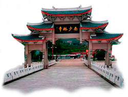
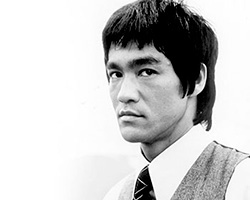
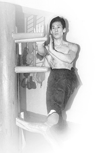
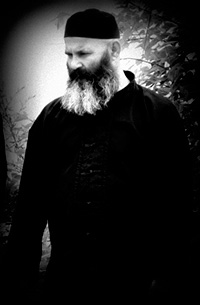
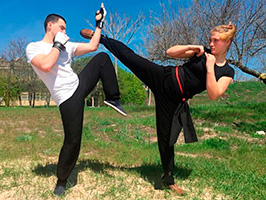

Истоки
Вин Чунь был малоизвестен посторонним до середины двадцатого века. Существуют различные, порой не связанные между собой версии истории боевого искусства Вин Чунь. Корни стиля прослеживаются на протяжении последних 250 лет и восходят к южному монастырю Шаолинь.
В то время монастырь оставался непоколебимым, несмотря на многочисленные нападки со стороны правящей династии Манчжу. В монастыре преподавалось классическое боевое искусство, обучаясь которому через 15-20 лет выпускался совершенный воин.
Необходимость более быстрой подготовки бойцов подтолкнуло пять лучших мастеров Китая встретиться и обсудить достоинства каждого стиля кунфу. Они выбрали наиболее эффективные методы, теории и принципы из различных стилей и продолжили развивать программу обучения, которая позволяла подготавливать бойцов через 5-7 лет. Прежде чем программа была осуществлена, Южный монастырь был захвачен и разрушен.
Одинокая монахиня Нг Муи была единственной оставшейся в живых, кто знал полную систему. Она блуждала по деревням до тех пор, пока не встретила молодую девушку сироту и не обучила ее системе. Она назвала девушку Им Вин Чунь, что переводится как Прекрасная Весна или Надежда на Будущее, и уже вдвоем они продолжили оттачивать боевую систему. Уже Вин Чунь систематизировала стиль, придала ему стройность школы. Великая Матушка, как ее называли адепты стиля, отработала методы тренинга, ввела в обязательное обучение работу парными мечами, копьем и шестом.
Технический арсенал был закодирован в трех комплексах - "Рождение Духа", "Наведение мостов" и "Бьющие палки". Также был разработан комплекс движений с деревянным манекеном.
Стиль был пронесен через годы и в конечном счете стал известен как Вин Чунь, в честь основательницы. Искусство приобрело еще большую популярность, когда один из его адептов, Брюс Ли, начал демонстрировать его по всему миру.
Вин Чунь сегодня завораживает сотни тысяч поклонников и поклонниц КУНФУ.
Немногие Школы могут похвастаться такой стройной системой, такой логичностью и быстротой движений, такой законченностью и эффективностью. Это не шоу, это - мощное оружие.
Стиль Вин Чунь Квен (в северном прочтении Вин Чунь Цюань) настолько самобытный и яркий, что его нельзя спутать ни с каким другим видом.
Характерными чертами Вин Чунь Кунфу являются высокая боевая стойка, агрессивный метод ведения боя, соединение техники защиты с одновременной атакой и невысокие быстрые удары ногами. Уникальность школьного тренинга приходится на знаменитые «липкие руки» (Чи Сао), где чувство партнера доходит до такой степени, что работа ведется с закрытыми глазами. Аналогичный тренинг существует и для ног. Кулак Вин Чунь вбирает в себя мягкие и жесткие принципы ведения боя. Он является пограничным стилем между так называемыми «внешними» и «внутренними» стилями кунфу. Хотя само подобное деление не выдерживает серьезного анализа.
Фундаментальность подхода построена на основных категориях китайской натурфилософии Инь и Ян. Эта концепция выражена в легенде о схватке журавля со змеей. Журавль – это небо, Ян. Змея, соответственно, земля, Инь. Осуществляя принцип триады – "Земля, Человек, Небо" – адепт Вин Чунь Кунфу не противопоставляет Журавля и Змею, а наоборот, объединяет в себе эти начала, приходит к гармонии движения и покоя.
Патриархи
Люди КУНФУ всегда славились умением бережно относиться к заветам предков. Передается эта эстафета и в Вин Чунь КУНФУ.
Патриархи Школ - это столпы, поддерживающие небосвод КУНФУ, на котором не переставая загораются звезды все новых и новых мастеров.
Юй Чой, четвертый Патриарх Вин Чунь КУНФУ, приходился Ип Мену старшим братом по Школе (не путать с кровным родством). Именно он посвятил будущего Учителя во многие тайны КУНФУ. Традиции живы и сегодня. Сын Юй Чоя, пятый Патриарх Вин Чунь КУНФУ Юй Кил, назначил своим наследником мастера из Гонконга. Штаб-квартира Наследника находится в Великобритании, где он Мастер Вай По Тан возглавляет Институт Воинских искусств.
Мастер Тан - неустанный пропагандист Вин Чунь КУНФУ, он доказывает превосходство стиля не только статьями и книгами, но и схватками на ринге.
Ассоциация клубов КУНФУ "Лабиринт"
Историю своего существования Ассоциация начинает с 1986 года, когда группа единомышленников под руководством Мастицкого Юрия Ивановича решила зарегистрировать клуб «Гармония», который был реорганизован в 1992 г. в клуб Вин Чунь КУНФУ «Триада» (г. Светловодск). Реорганизация была связана со сменой профиля занятий и вхождением в Международную Ассоциацию клубов кунфу «Триада» (Санкт-Петербург, Россия). Базовым стилем стал высокоэффективный в реальном бою Вин Чунь Квен.
Долгое сотрудничество с Международной Ассоциацией клубов КУНФУ «Триада» и ее духовным лидером мастером Логиновым, а также рекомендательные письма мастера Саймона Лау позволило нам стать студентами Лондонского Института воинских искусств и лично познакомиться с Наследником системы Вин Чунь Квен - Вай По Таном.
Регулярные выезды на семинары Института, работа в одном зале рука об руку с мастером Таном и мастером Логиновым позволили нам приобщиться к знанию из первоисточника, и мастер Вай По Тан лично провел аттестацию наших инструкторов.
Сам же Логинов А.А. получил посвящение в наставники традиционной Школы воинских искусств в одном из буддийских монастырей юго-восточной Азии. Сегодня он признан многими мастерами с мировым именем: это Юй Кил, пятый патриарх традиционной ветви Вин Чунь КУНФУ, это Чак Норис, который принял Логинова в созданный им элитарный клуб Мастеров черного пояса, это Джейнс Демайл, соратник Брюса Ли, передавший Логинову права на издание своих книг в России, это Экиошо Аракаки, шихан (патриарх) традиционного окинавского каратэ, доверивший Логинову представительство в России.
Можно еще долго продолжать список ярких мастеров, с кем Логинова связывают единые взгляды на мир воинских искусств. И, как подтверждение этого уровня, есть посвящение мастера Логинова в сан учителя монастыря Шаолинь, проповедника КУНФУ.
Сегодня клуб перерос в Ассоциацию клубов кунфу «Лабиринт» под руководством мастера Мастицкого Ю.И., единственного, представляющего на Украине официальную ветвь системы Вин Чунь Квен и посвященного в сан Наставника Школы мастером Логиновым.
За 20 лет развития в Украине стиля Вин Чунь Квен появилось огромное количество сторонников и почитателей этого направления Воинского искусства, живущих во многих городах нашей страны. Поэтому для защиты прав сторонников и обеспечения последующего развития стиля возникла необходимость в создании Всеукраинской Федерации Вин Чунь КУНФУ и Китайского бокса, которая была зарегистрирована в 2008 г. Президентом Федерации является воспитанник мастера Мастицкого Ю.И. Исповедник Школы Медянский И.Т.
Китайский бокс
Спортивное направление, дань почтения и уважения перед мастерами прошлого – Китайский бокс был создан в течение десяти лет ежедневной работы инструкторского состава АКК "Лабиринт" при личном содействии Мастера Вай По Тана, Саймона Лау и мастера Логинова.
Техника включает в себя работу по пяти традиционным стилям: Тигр, Дракон, Змея, Журавль и Леопард. Каждый из стилей содержит в себе Уроки, комплекс Форм, работу шестами.
Китайский бокс полностью основывается на традиционной системе Вин Чунь Квен и рассматривается как подготовительный этап для вступления в Школу Воинского искусства. Система содержит в себе работу на всех дистанциях, борьбу, тактику и стратегию ведения поединка, акробатику. Превосходство системы доказано не на одном международном турнире, и сейчас находится на стадии лицензирования.
Так как это спортивная система, бои проводятся с некоторыми ограничениями, но без весовых категорий и с минимумом индивидуальных средств защиты, на высоком помосте, что позволяет более эффективно использовать тактику ведения боя.
Помимо боев проводятся турниры по формам, что позволяет занимающимся детально изучить технику и тактику системы. Приобщиться к китайскому боксу могут все желающие, прошедшие собеседование с инструктором.
Традиционное же направление основано на системе Вин Чунь Квен. Вин Чунь Квен не содержит ни одного лишнего технического приема, и его тренировочная программа – одна из самых рациональных в китайском военном искусстве. Ее можно освоить за пять лет.
Краеугольный камень эффективности боя – личная интуитивная реакция, доведенная до автоматизма. Стиль Вин Чунь Квен настолько самобытный и яркий, что его нельзя спутать ни с каким другим видом.
Система Вин Чунь Квен является боевой системой, по этому только единицы, прошедшие годы работы в зале по китайскому боксу, могут быть допущены к ней Наставником.